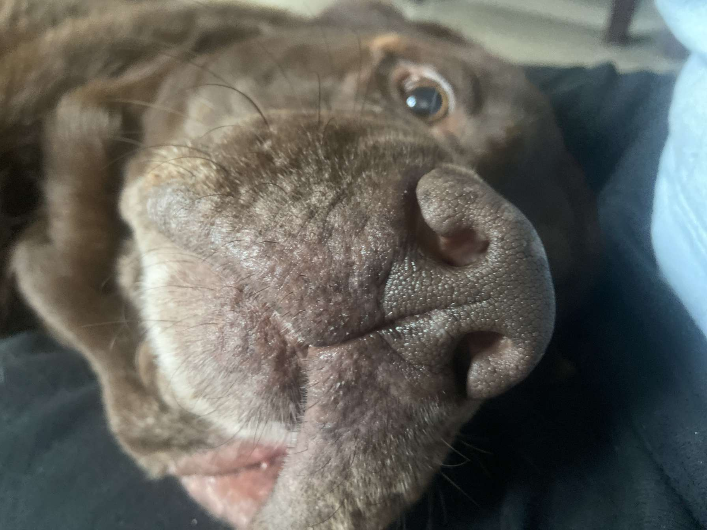
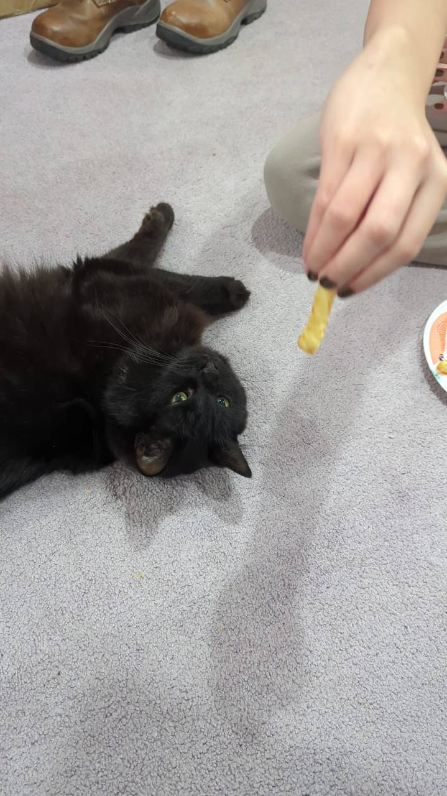
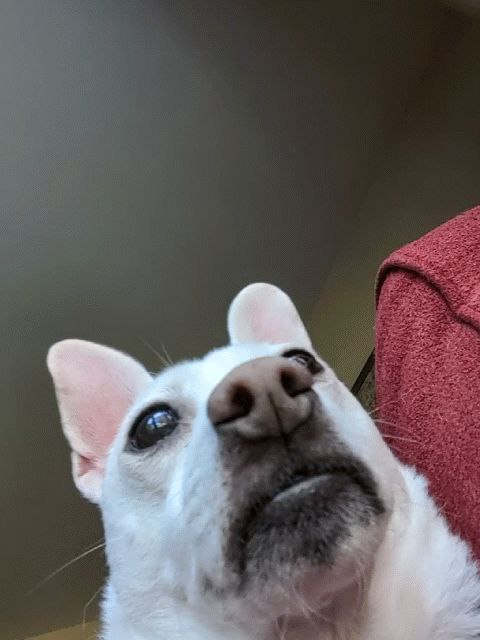

Pets
Bacon Q. Dog

Bacon Q. Dog is a 9yr old labradoodle. He prefers to spend his days lounging among the three different beds/couches that his family has gifted him. He enjoys a walk or two around the neighborhood, as long as he can pretend that he doesn't see any of the other animals to avoid the embarrassment of not wanting to admit he has no wolf-like skills in chasing them.
At night just as the rest of the family is ready to relax, Bacon suddenly wants to release all of his energy. He will place his toys on a mini couch and frantically drag the couch around, giving his toys "a ride." There is also a lot of rolling. Lots and lots of rolling.
Photo Gallery


Likes
- Belly rubs
- Playing tug-of-war
- Sneaking onto the couch
Baxter
Baxter Q. Dog is a 7 year old Maltese/poodle hybrid. While he likes to sleep like a human, he will let you know he wants to fully sleep with a blanket and pillow. This was accidentally habituated from his owners pampering him when he was a puppy. One day, his owner stopped and he couldn't sleep thorughout the whole night. Hence, it is now part of a nightly ritual.
Baxter also likes to to take walks across the neighborhood and enjoys smelling every flower he comes into contact with.
Photo Gallery
Likes
- napping with humans
- treats, specifically if you feed it to him like an airplane
- Barking at new things
Prince
Prince Q. Dog is a 5 year old pitbull. He is a better vacuum than most, he will east anything. He will eat everything. He LOVES naps, especially with his owner. Although Prince is sedentary, he does like occasional walks.
Photo Gallery
Likes
- napping with humans
- Hugs
- Drooling over everything
- food
Jax
Jax Q. Cat is a 5 year old pitbull. This was accidentally habituated from his owners pampering him when he was a puppy. One day, his owner stopped and he couldn't sleep thorughout the whole night. Hence, it is now part of a nightly ritual.
Baxter also likes to to take walks across the neighborhood and enjoys smelling every flower he comes into contact with.
Photo Gallery
Likes
- napping with humans
- Hugs
- Drooling over everything
Bubby
Bubby Q. Dog is a Chihuhaua Corgi mix. He loves to eat peanut butter and doesn't have nay allergies. Sleeping is Bubby's favorite activity. Carrots are Bubby's favorite snack! Going on walks and car rides are an absolute must for Bubby!
Photo Gallery
Likes
- carrots
- peanut butter
- sleep